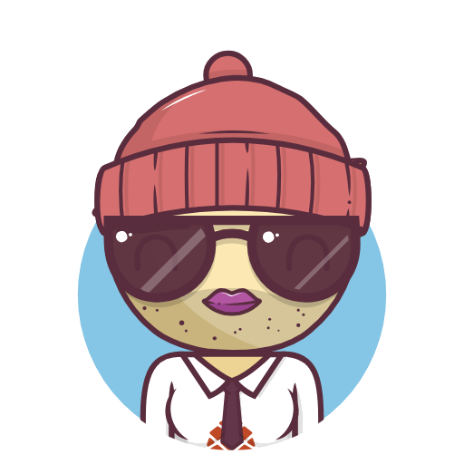

截至 9 月底，上市公司數量、市場市值與年度籌資額都維持擴張。
1,085家上市公司
156.81T上市公司總市值
3,195.85 億2026 年累計籌資
22
較 2025 年底增加的上市公司家數
總市值較 2025 年底增加 62.45 兆元。
市場規模、指數與成交值
一頁看懂這個市場的研究入口
資料截至 2026-09-30 只使用 Wiki 已整理內容
截至 9 月底，上市公司數量、市場市值與年度籌資額都維持擴張。
9 月的價格表現與交易活躍度出現不同方向。
台積電同時位居市值與成交值排名首位。
上市公司營收成長強，但 AI 需求到個別公司獲利的傳導仍需驗證。
風險類型
需要一起追蹤
無風險利率、風險溢酬與盈餘預期。
能源、匯率、關稅與地緣政治。
AI 需求是否擴散到不同產業與供應鏈。
注意／處置股票、ETF、權證與永續揭露規範。
目前 Wiki 足以建立市場快照，但還不足以拆解市場上漲的廣度與 AI 需求的公司層級影響。
市場寬度
上漲／下跌家數、等權重指數與產業報酬。
公司層級
訂單、庫存、毛利率與資本支出。
情境分析
利率、能源價格、匯率與臺股估值敏感度。
